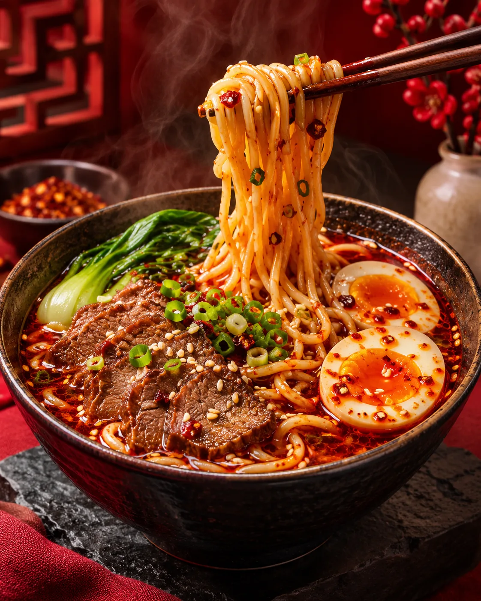
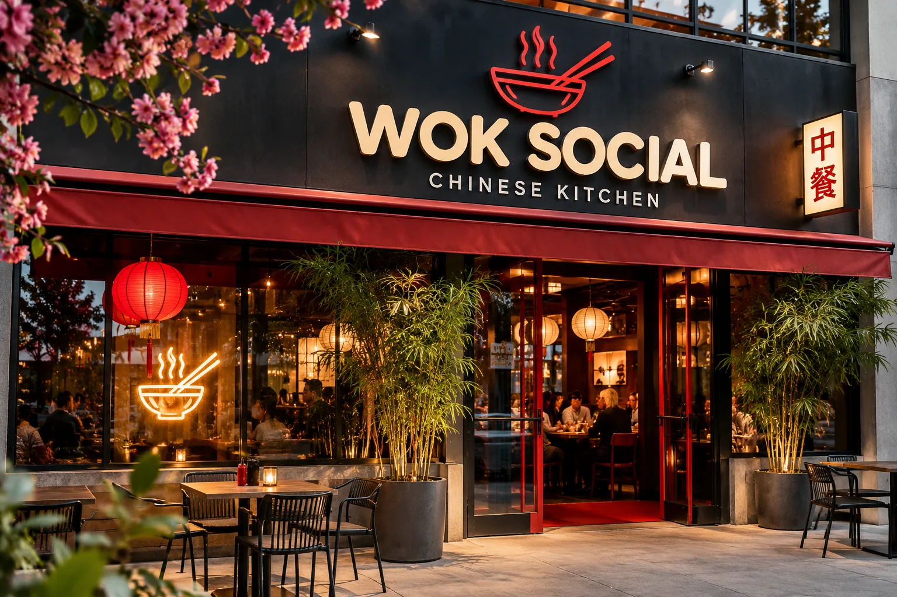
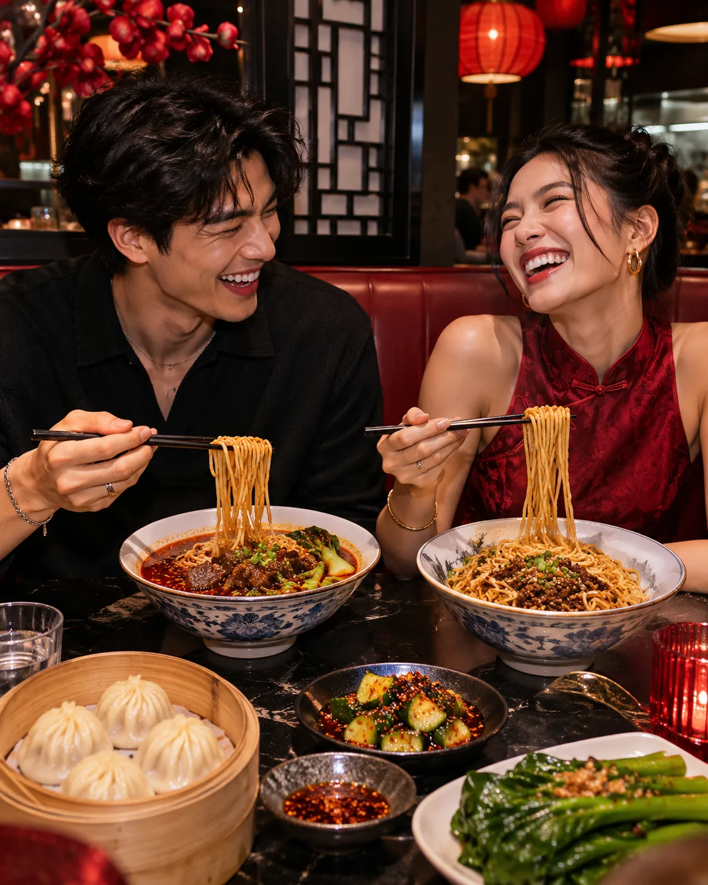
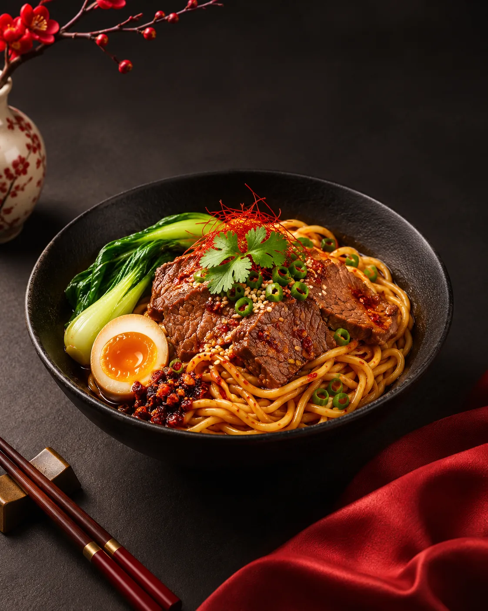
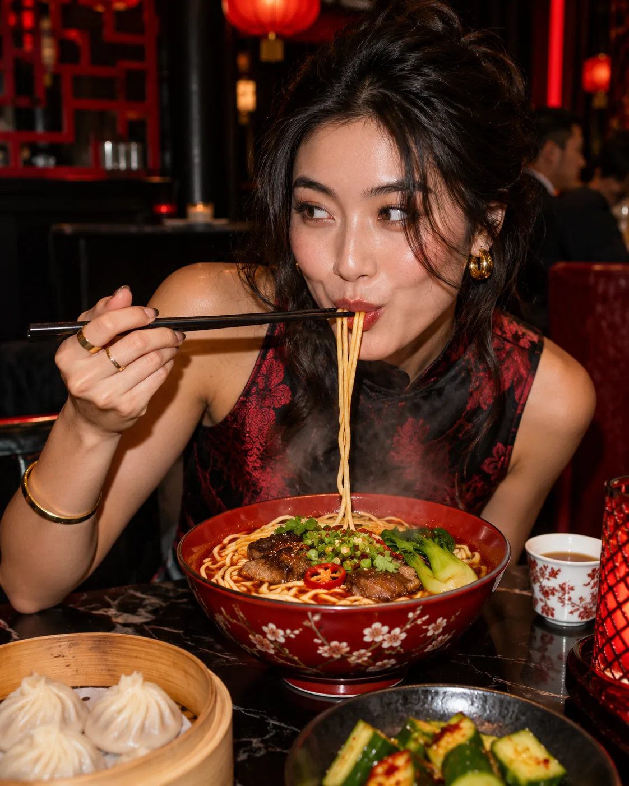
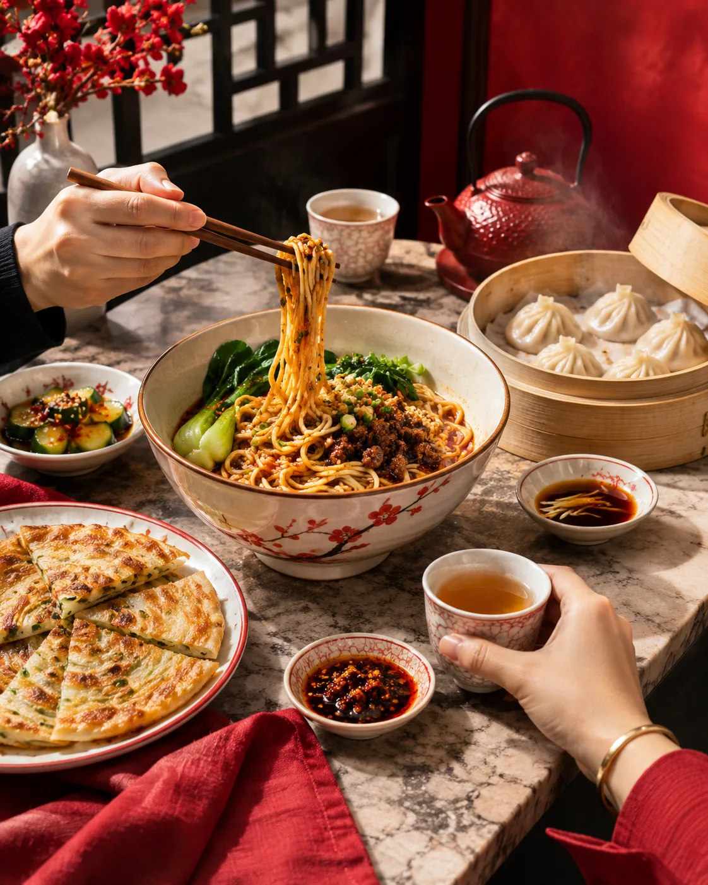
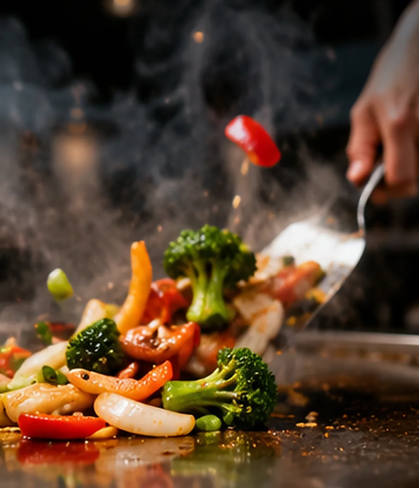
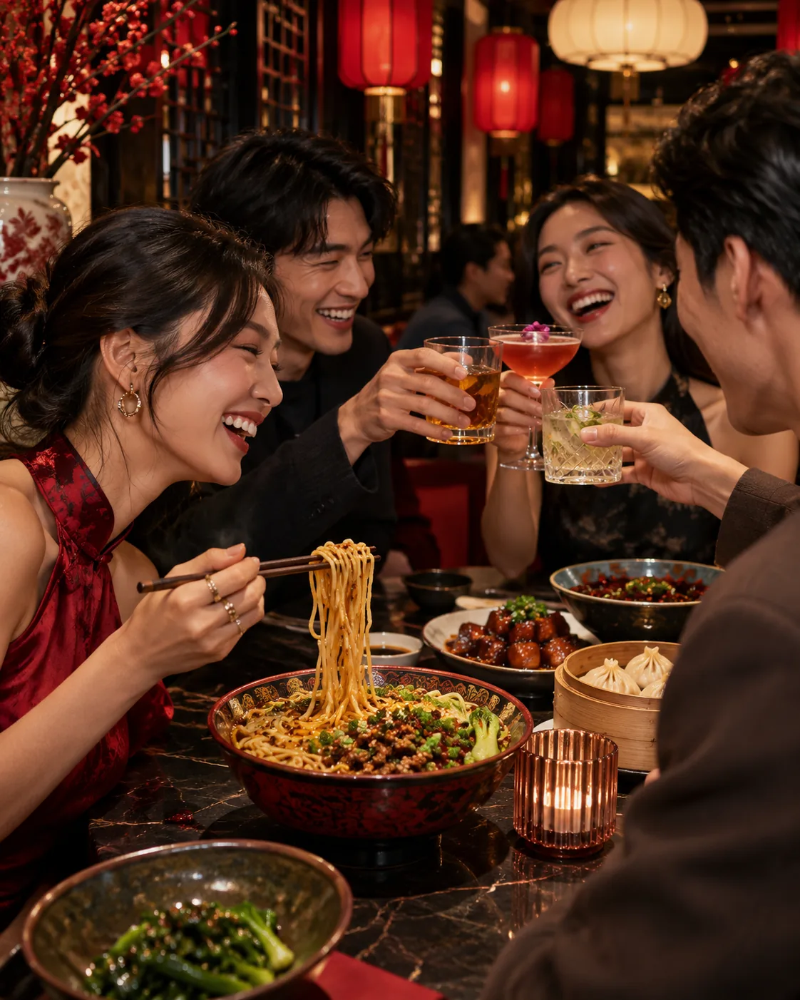
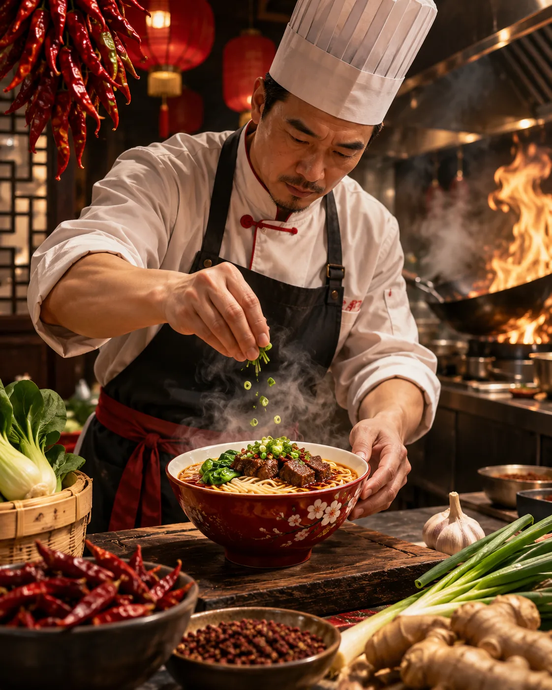

BEST LOVED01 / NOODLES
Signature Chili Beef Noodles
Tender beef, chili warmth, springy noodles and a rich comforting broth.
Where the noodles are generous, the wok is always part of the story, and every table feels like the best table.


GOOD FOOD. GREAT PEOPLE.Big bowls, bright flavors and shared little moments. A restaurant concept built around the joy of gathering over something good.
Noodles lifted high. Chili oil catching the light. The moment before the first delicious bite.
MEET THE BOWLS
THE GOOD STUFF



BRING YOUR PEOPLEGreat meals have a way of bringing everyone together. Pull up a chair, pass the dumplings and make room for one more bowl.
EXPLORE THE MENUSteam, movement and the craft behind the bowl. This visual story celebrates the people who make good food memorable.
FRESH ENERGY DAILY
Explore the menu and discover your favorites. Orders are not accepted in this concept.